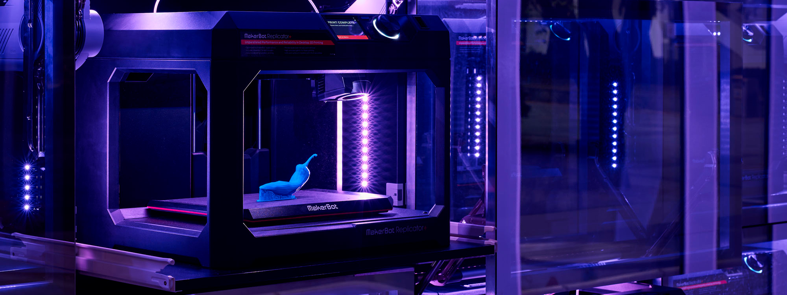
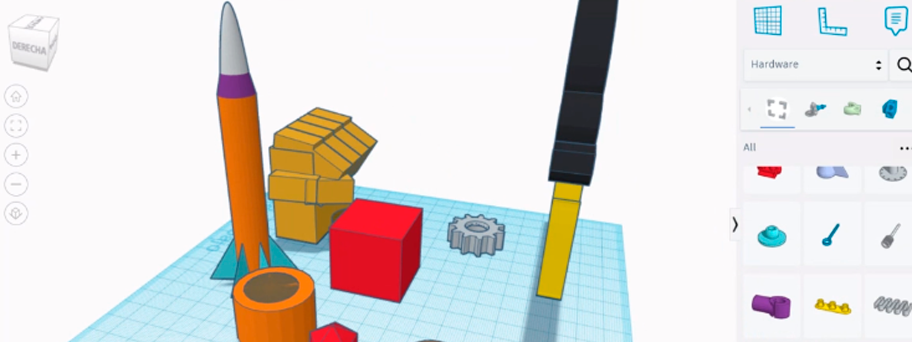

Semana 9
Laboratorio de innovación 2
Jueves 26 de Octubre
Fuimos a la sala de laboratorio donde están las impresoras 3D donde habían 3 con diferentes características, vimos algunas impresiones que estaban ahí, los filamentos que usan y también estructuras hechas con corte MDF. Luego en nuestro salón, realizamos nuestro diseño individual de cómo implementaremos nuestro circuito en un producto e hicimos una maqueta con papel.
Sábado 28 de Octubre
Vimos la interfaz de Tinkercad para desarrollar el 3D de nuestro proyecto, viendo cómo navegar en el espacio, colocar formas y transformar su tamaño y color y también como sustraer una forma de otra para generar un nuevo objeto. En grupo, cada uno eligió 5 diseños en la librería de Tinkercad que le puedan ser útiles a nuestro proyecto. En mi caso, elegí 2 diseños de macetas, 1 difusor, 1 techito y 1 depósito de agua.
